Thanh điều hướng mới
Trái là logo (mark và chữ, không số). Giữa là tấm biển Số, rồi năm danh mục. Phải là tìm kiếm, đã lưu, tài khoản, giỏ. Link "Số 05" cũ bỏ đi vì tấm biển đã làm đúng việc đó; đồng hồ đếm ngược cũng bỏ. Ảnh chụp từ trang thật đang chạy.
Máy tính, 1280 px
Hai màu biển. A đúng như option F: biển mật ong, viền và chữ đen. B là hàng thứ ba của F: biển vải đen, viền và chữ mật ong, cùng chất với tem Số hiện nay và với bìa.
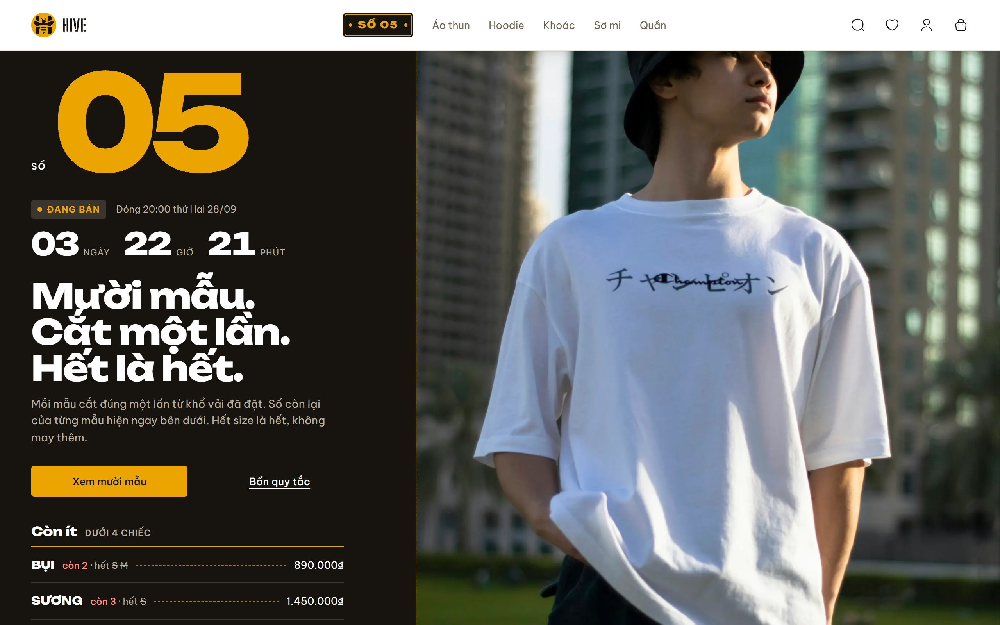
Tấm biển ở từng trạng thái
Biển không còn chấm màu và đồng hồ. Trạng thái nằm ở màu biển: xanh khi Số chưa mở, xám khi đã đóng. Khi làm thật, link mang thêm tên trạng thái cho trình đọc màn hình, ví dụ "Số 06, sắp mở".
| A | B | |
|---|---|---|
| Đang bántrạng thái thường | 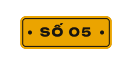 | 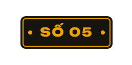 |
| Sắp mởchưa có Số nào đang bán | 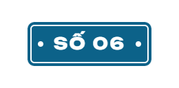 |  |
| Đã đónggiữa hai Số | 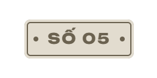 | 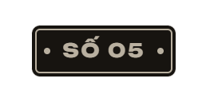 |
| Đang xem cả Sốgạch mật ong như danh mục đang chọn | 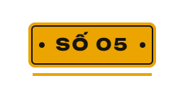 | 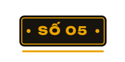 |
| Rê chuột | 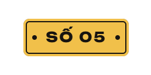 | |
| Tab tớivòng focus của hệ | 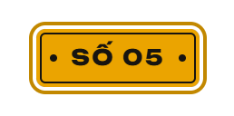 | 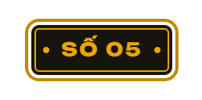 |
Đang chọn một danh mục
Danh mục giữ nguyên cách báo đang chọn: chữ đậm và gạch mật ong. Hai màu biển giống nhau ở chỗ này.
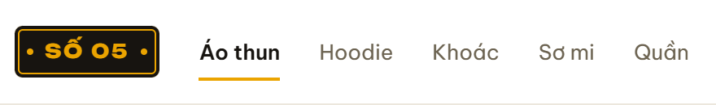
Điện thoại
Bố cục giữ nguyên: logo · biển · bốn nút. Logo mới rộng 65 px, biển 82 px; không danh mục như trước.
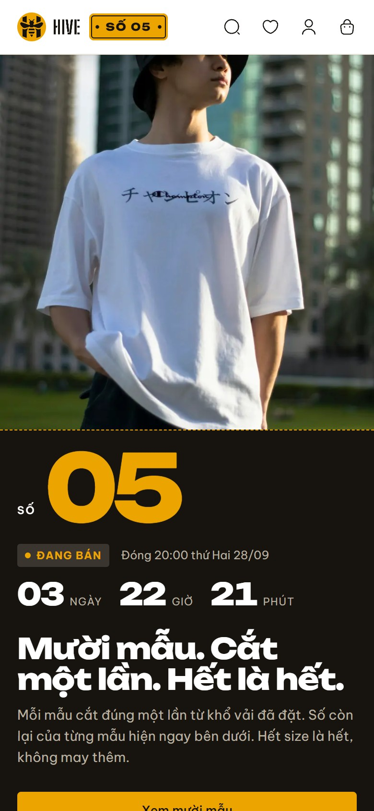
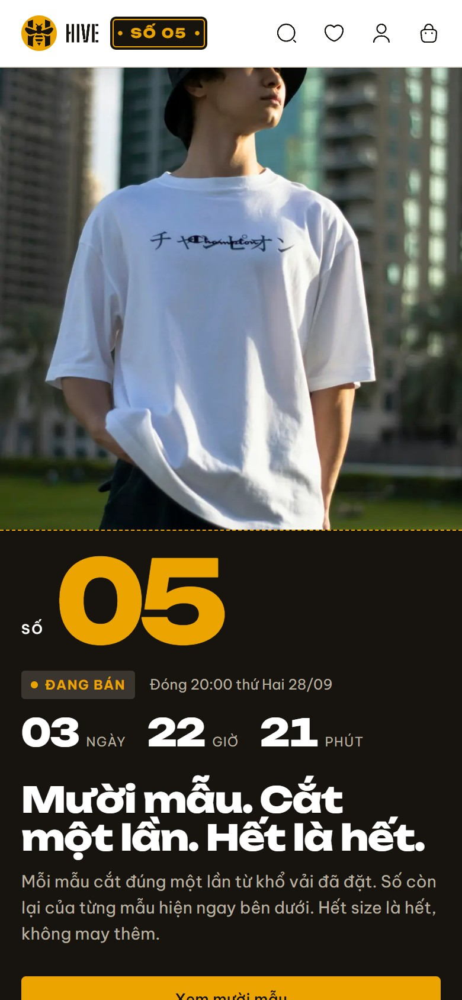
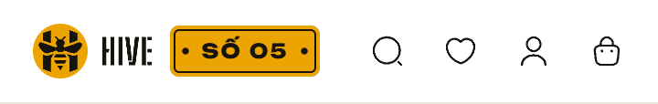
Khổ màn khác
Khi làm thật
- Thứ tự trong thanh: logo · biển · danh mục · bốn nút, cả trong mã, để phím Tab đi đúng thứ tự mắt nhìn.
- Biển là link như tem cũ: Số đang bán mở danh sách mẫu, Số đã đóng mở trang lưu của Số. Biển nhận gạch "đang xem cả Số" mà link "Số 05" từng mang.
- Bỏ đồng hồ khỏi thanh, kèm bộ đếm chạy mỗi giây. Đồng hồ lớn trên bìa trang chủ giữ nguyên.
- Logo vẽ bằng SVG ngay trong trang, lấy từ
prototype/name/logo/hive-lockup.svg: cao 32 px trên desktop, 30 px trên điện thoại. - CSS theo đúng bản đã chụp:
prototype/name/nav/proposal.css(desktop dùng lưới bốn cột để cụm giữa nằm giữa thanh). - Ngoài phạm vi: chân trang, thanh bên quản trị và phiếu giao hàng vẫn dùng chữ HIVE cũ; làm ở lượt sau nếu bạn muốn.
Đề xuất: B. Hình biển số của F giữ nguyên (viền trong, hai lỗ ốc, chữ đậm), và thanh vẫn giữ hai luật của hệ: tem Số
là vải đen như bìa, còn "Xem mười mẫu" là mảng mật ong duy nhất. Chọn A nếu bạn muốn đúng tấm biển vàng ngoài đường; khi đó
DESIGN.md ghi thêm một ngoại lệ cho luật Một Sợi Chỉ.